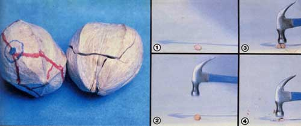

ABOVE LEFT: If you hit a hickory nut on the ""bull-eye - a point about 1/3 of the way down from its stem - the husk should fracture approximately along the lines drawn on the sample pictured here. (The nut on the right has been cracked, and glued back together.) ABOVE: RIGHT: The sequence of steps used in opening one of the tough nuts. [1] Lay the nugget on its side and raise your hammer several inches above it. [2] Aim for that optimum impact spot. [3] Whack the nut sharply... and [4] it'll break cleanly into several pieces, from which you can extract the meats.